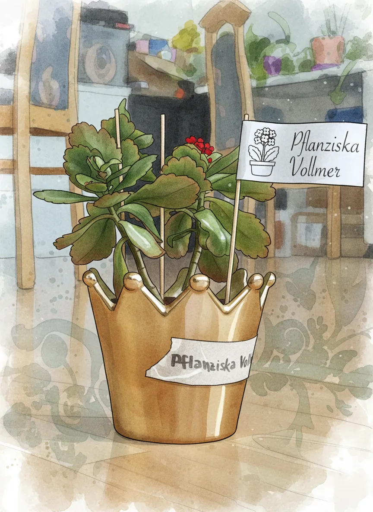
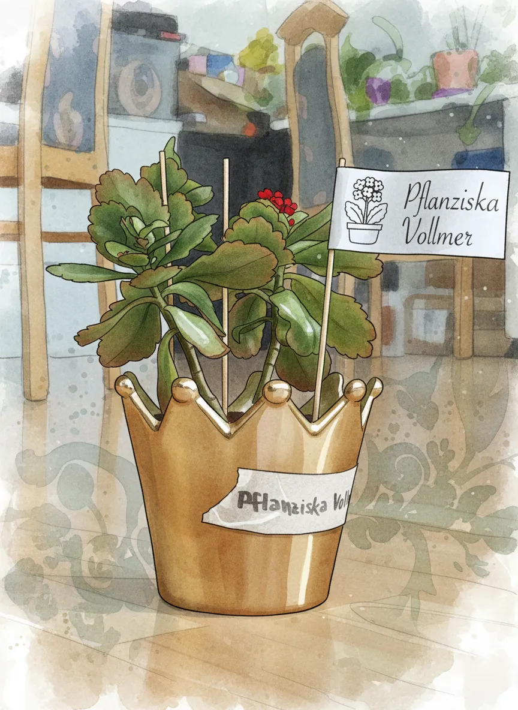

Pflanziska Vollmer

 

Plant Mood
Pflanziska Vollmer. Not just a houseplant, but a living monarch, perpetually observing her loyal subjects (aka, the dust bunnies) from atop her gilded throne on the Livingroom TV. She's 30cm of regal green, served by her faithful plastic pot, ensuring her reign is well-drained and good. She’s often heard whispering, 'A kingdom of my own. All of it. Mine!'
Plant Details
| Custom Name | Pflanziska Vollmer |
| Scientific Name | Kalanchoe blossfeldiana |
| Health | Good |
| Size | 30 |
| Environment | Livingroom TV |
| Has Grow Light | Unknown |
| Pot Type | potPlastic |
| Pot Soil | allPurposePottingMix |
| Pot Size | 12 |
| Has Drainage | Yes |
Care Schedule
| Action | Last Done | Next Due |
|---|---|---|
| Watering | ||
| Fertilizing | - | |
| Repotting | ||
| Cleaning | - | - |
| Progress Update | ||
| Misting | - | - |